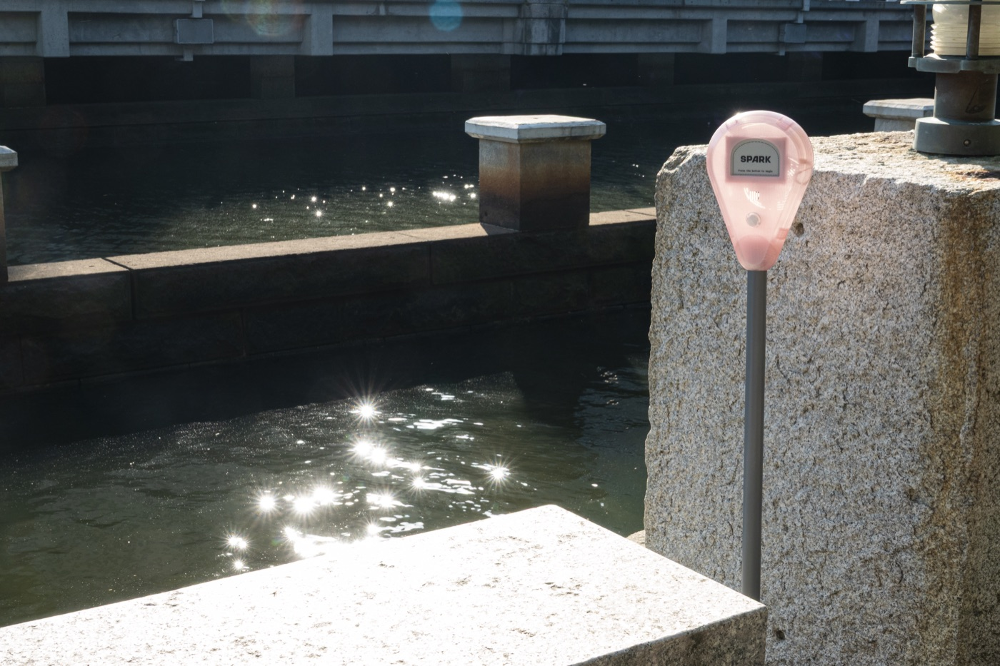
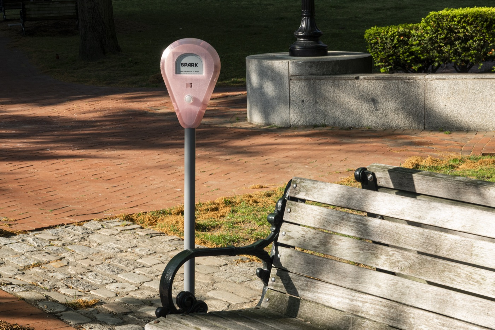
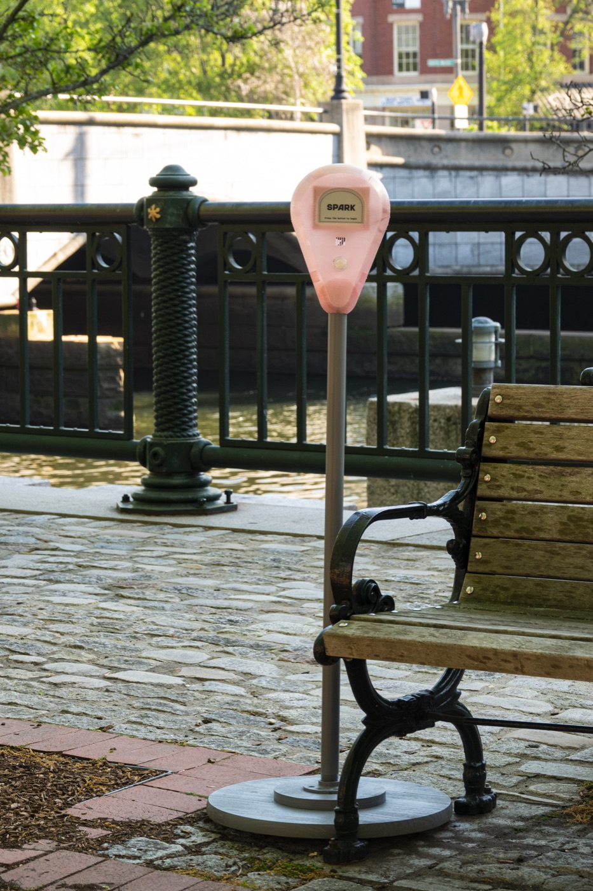
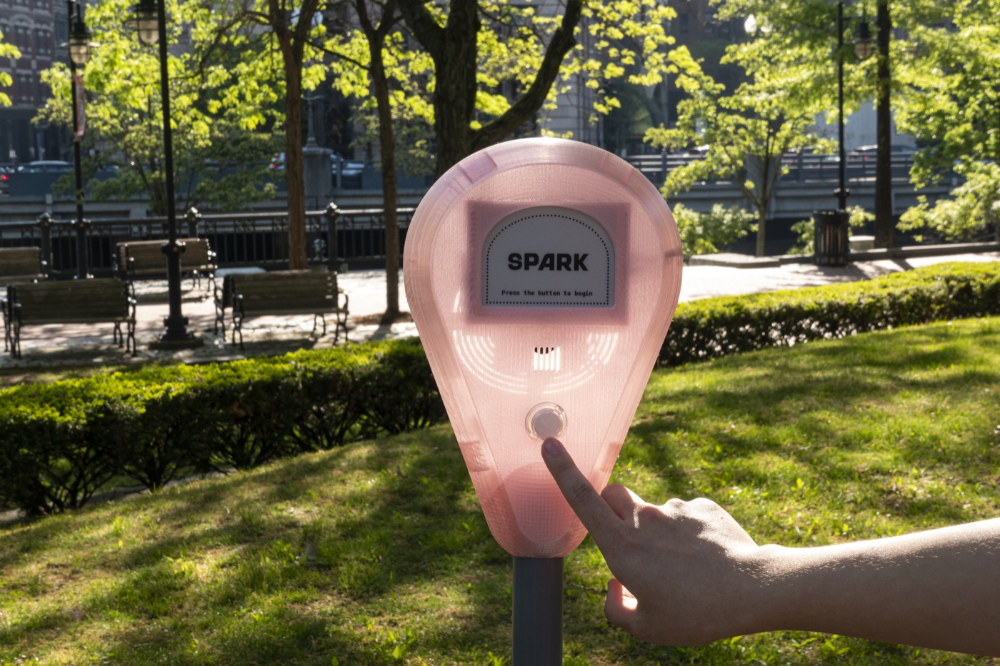

A hyperlocal story collecting installation
Emotional weather station
Spark turns personal stories into a shared emotional weather forecast, capturing the shifting mood of a place through the voices of the people who pass through it.
- Voices of Place
- Emotional Weather
- Living Place Archive




Why Spark?